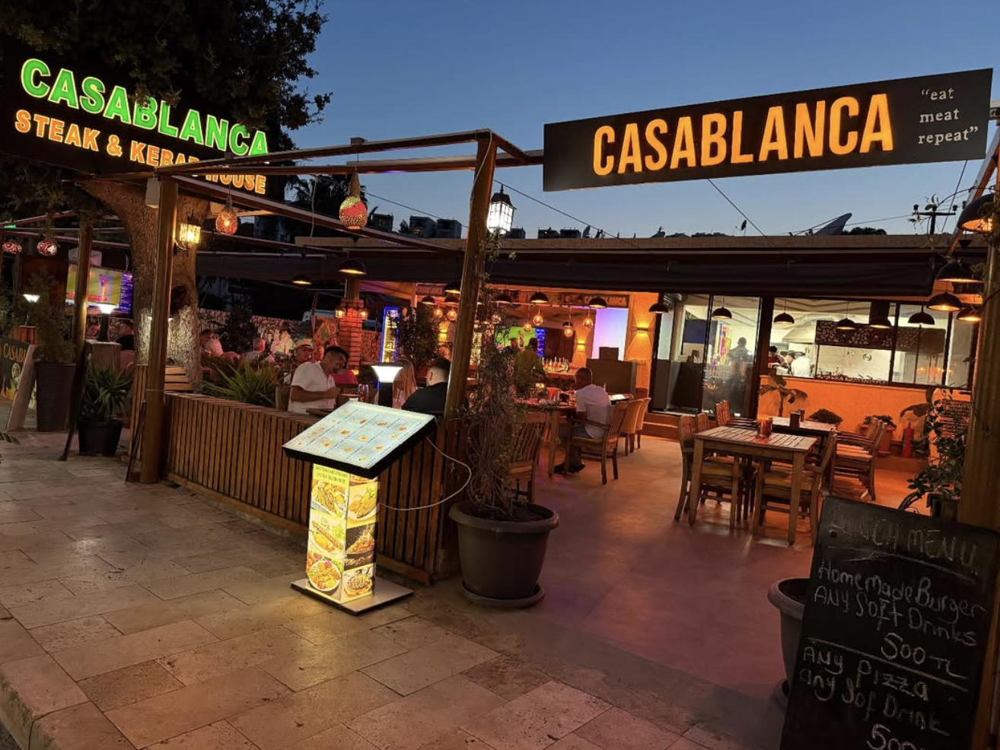
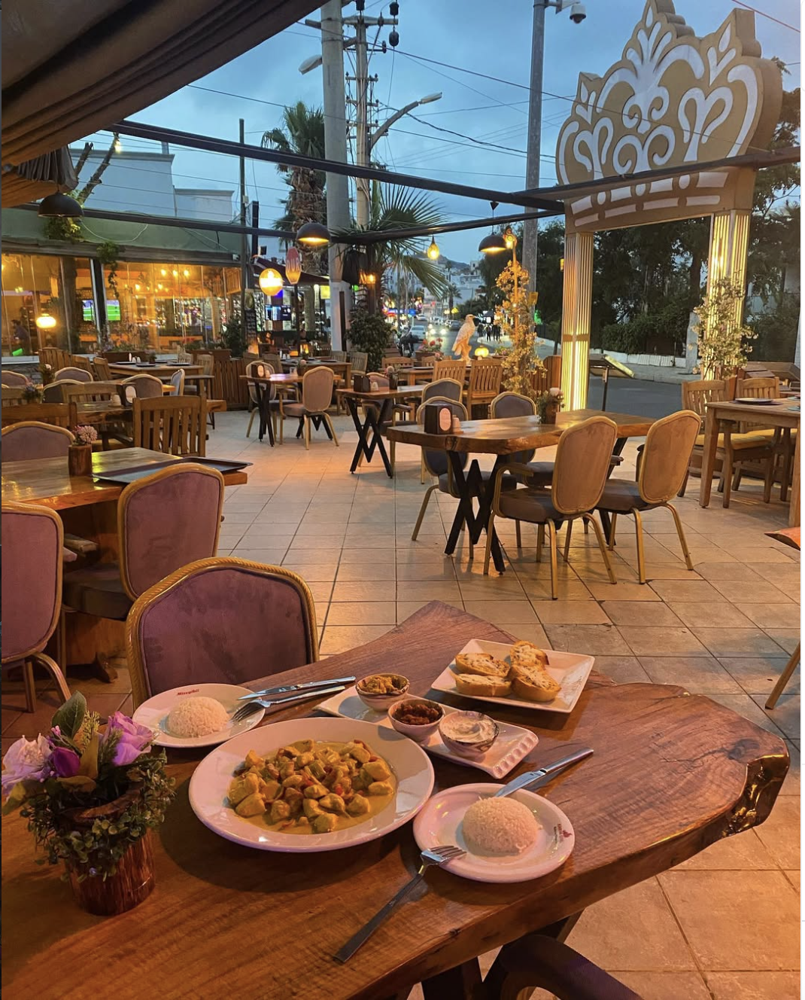
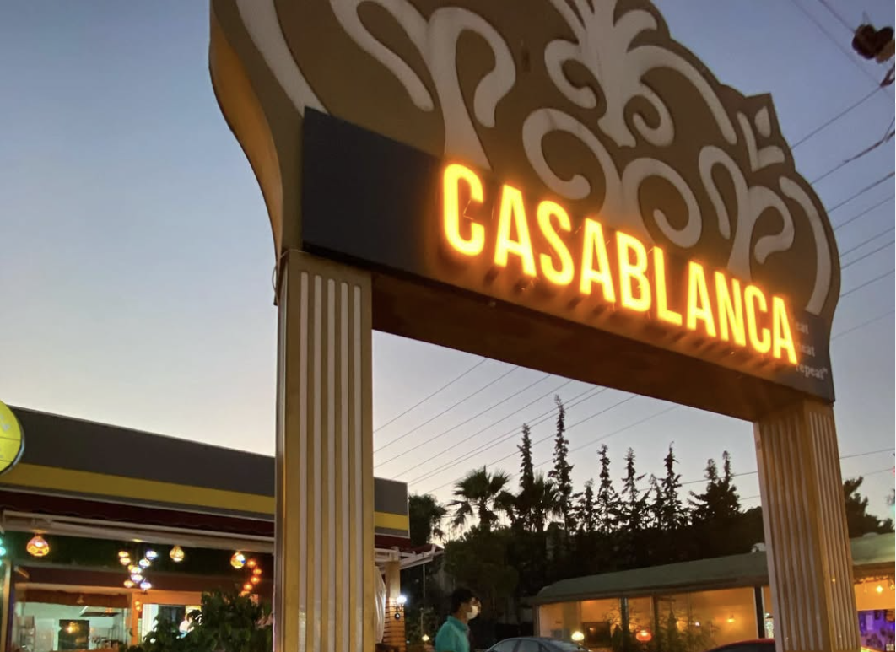
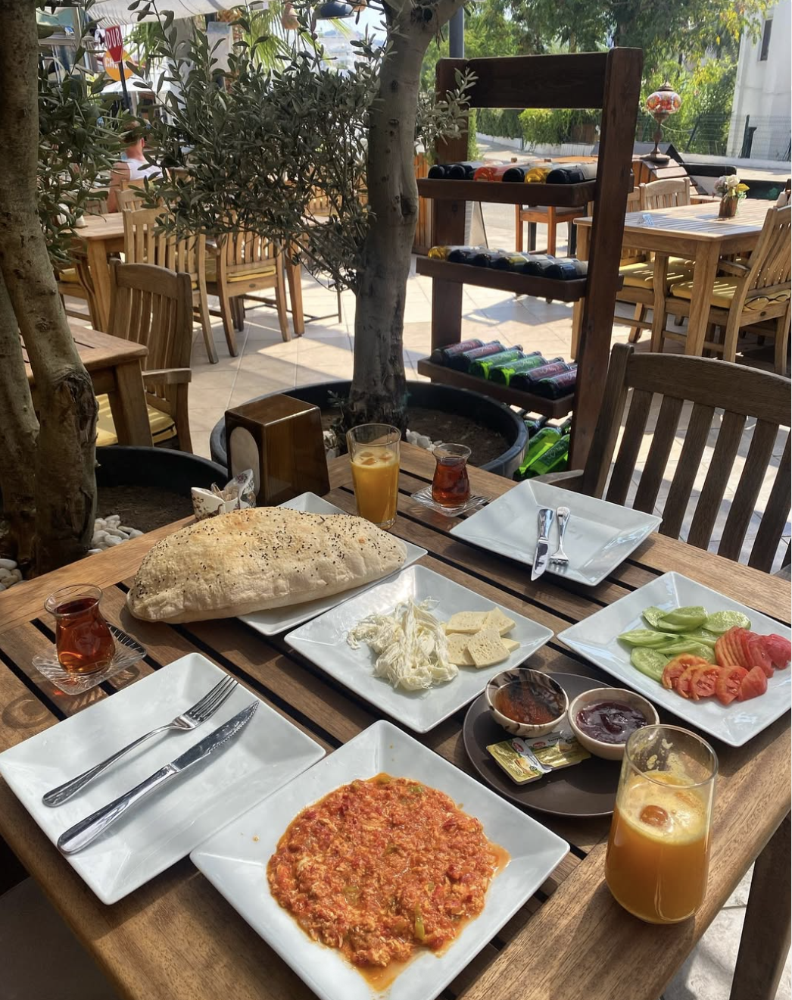
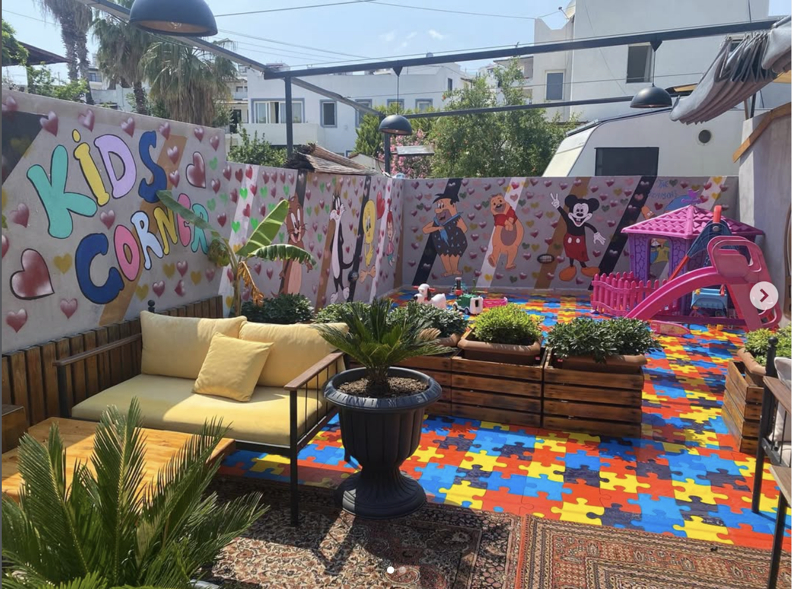

— I —
Grill House
Açık ateş, dana bonfile, T-bone, kuzu pirzola ve imza Casablanca Mix Grill.
- Prime bonfile · 400g
- Bone-in ribeye antrikot
- Kuzu pirzola · ızgara
- Casablanca Mix Grill ★
Gümbet · Bodrum · "Eat Meat Repeat"
Bodrum Gümbet'te ızgaranın, şarabın ve sakin bir gecenin buluştuğu ev. Açık ateş üzerinde bonfile, geniş şarap kartı ve gece 02:00'a kadar süren bir Akdeniz akşamı.

Gümbet · Bodrum, 48400
Gümbet'in koşuşturmasının arasında — sakin, ferah, kaliteli müzikli bir ev.
Izgara, şarap ve Akdeniz mezesi — Casablanca'nın üç temel halini birleştiriyor.
Açık ateş, dana bonfile, T-bone, kuzu pirzola ve imza Casablanca Mix Grill.
Türkiye ve Akdeniz şarapları, geniş cam-kadeh seçkisi, şefin eşleştirme önerileri.
Mezeler, salatalar, taze deniz mahsulleri, sıcak tava ve fırın güveçleri.
Casablanca, Gümbet'in ortasında — kalabalığın hemen yanında ama sessiz, ferah ve nezih bir köşe. Açık ateşte ızgara, geniş bir şarap kartı ve Akdeniz mutfağının ev hali bir araya geliyor.
Misafirlerimizin söylediği gibi: "fiyatlar çok uygun, personel çok ilgili, sessiz ve sakin bir ortam, fonda çalan müzikler kaliteli." Sabah kahveden gece yarısı sonrası şaraba kadar — gün boyu açığız.
Cepheden tabağa, şişeden ışığa — birazdan burada.




66+ değerlendirme, 4.8 ortalama — birkaç söz aşağıda.
★ ★ ★ ★ ★"Çok memnun kaldık, fiyatlar aşırı uygun. Personel çok ilgili. Temiz ve yemekleri lezzetli. Sessiz, sakin, rahat bir ortam. Fonda çalan müzikler kaliteli ve dingin. Pişman olmazsınız."
★ ★ ★ ★ ★"Cumartesi gecesi alelade gezerken bu mekana denk geldik, ışıklandırması hoşumuza gitti. Bize özel hazırlanan makarnalar harikaydı — geç saatte bile özen gördük."
★ ★ ★ ★ ★"Tatilim boyunca sabahları kahve içmeye geldiğim mekan. Güzel atmosfer, Bodrum'un kalanına kıyasla çok daha rahat hissedebileceğiniz ferah bir yer. Çalışanlar yardımcı, sakin ve nezih."
Hafta sonları erken doluyoruz. WhatsApp üzerinden mesaj atın — masa ve saat birlikte bakalım.